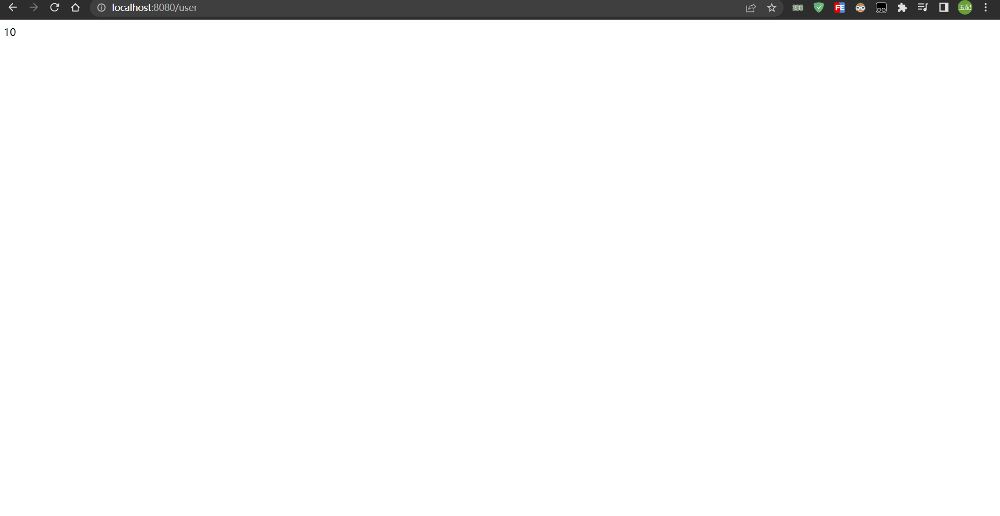
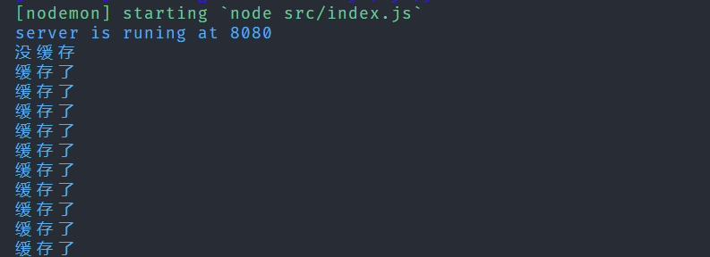

redis入门学习笔记
Redis
学习 redis 的目的 验证码需求 过期需求 登录需求 同意账号多人登录提示
相关命令
常用命令 String
select 1 选择数据库
get key 获取值
set key value 设置值
exists name 判断是否存在某个key
expire name 10 设置过期事件
FLUSHALL 清楚所有数据库内容
FLUSHDB 清除当前数据库内容
keys * 查看所有的keys
ttl key 看一个数据还有多久过期
move key 1移除当前读key
type key 类型
append key "value" 在key后追加字符串
setLen 获取字符串长度
incr/decr key +-1操作
incrby key 10 一次加10
get/setrange key 0 2 / 0 -1 获取/替换范围字符串
setex set with expire 设置过期事件
setnx 不存在在设置
常用命令 list
Lpush userlist wuyupei
Rpush userIst liuxu
Lrange 0 -1
Lpop
Rpop
Lindex userlist 0 获取指定位置list的值
Llen userlist 长度
lrem 移除指定的value
rpoplpush 组合命令
简单的使用
nodejs 连接远程服务器上的 redis 进行操作 相关代码 1.redis 连接
const Redis = require('ioredis');
const redisConfing = {
port: 6379, // Redis port
host: '8.141.63.127', // Redis host
password: '19781209Wyp',
db: 0, // Defaults to 0
};
module.exports = new Redis(redisConfing);
2.简单的缓存操作
const express = require('express');
const redis = require('./redis');
const app = express();
async function checkCache(req, res, next) {
let result = await redis.get('count');
if (result) {
console.log('缓存了');
redis.incr('count');
res.send(result);
} else {
next();
}
}
app.get('/user', checkCache, async (req, res) => {
console.log('没缓存');
let result = await redis.setex('count', 100, '1');
res.send(result);
});
app.listen(8080, () => {
console.log('server is runing at 8080');
});
效果: 请求第一次 请求第二次 请求第..次  控制台输出 
另外如果相比每次都进行数据库操作,使用 redis 缓存要快的多
总结
今天知识入门,简单的使用,后面我还会继续深入学习,争取精通它 加油!
----本文结束----
 生成树形数据
生成树形数据